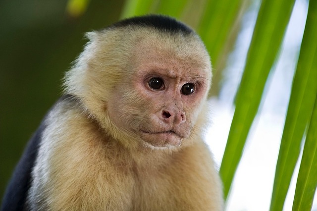

👁️ 👁️ 👃 👄mientras negocia contratos de derechos de autor con las hormigas filósofas del Amazonas.
Se dice que cada vez que parpadea, inventa un nuevo sabor de nube,
y su cola tiene la extraña habilidad de traducir el idioma de las palmeras al lenguaje secreto de los colibríes poetas.
A veces organiza fiestas clandestinas con jaguares en patines,
toca la batería usando cocos rellenos de confeti,
y recita poemas de amor a un pepino imaginario llamado Federico.
Los tucanes lo miran con celos, mientras los caimanes practican yoga en las orillas del río,
porque saben que el mono está tramando algo grande… aunque nadie sabe qué.
Cada miércoles se pone un sombrero hecho de hojas fosforescentes
y convoca a los insectos del bosque para debates sobre filosofía cuántica,
donde se discute si las lianas tienen alma y si los helechos sienten nostalgia.
Si alguien osa interrumpir la ceremonia,
el mono lo enfrenta con un látigo de plátanos imaginarios,
aunque curiosamente siempre termina compartiendo una limonada de arcoíris con el intruso.
Se rumorea que posee un mapa secreto hacia el valle donde los árboles cantan,
y que cada paso que da genera microclimas de chicle y helado de mango.
Al caer la noche, enciende linternas hechas de luciérnagas con talento teatral,
y organiza conciertos de percusión con raíces de bambú,
invitando incluso a las ranas con sombrero de copa y a los perezosos que saben tocar el triangle.
En su tiempo libre, escribe novelas de misterio sobre serpientes detectives,
y envía cartas perfumadas a los monos capuchinos de otras dimensiones.
Dicen que una vez hizo un tratado de paz entre monos y loros,
usando únicamente palitos de canela y chicles de colores.
Si lo ves corriendo sobre un tronco invisible,
no te sorprendas: probablemente está practicando para su audición en la Ópera Interplanetaria del Amazonas,
donde los premios incluyen un cinturón de hojas doradas y un título honorífico de “Maestro de la Banana Cósmica”.
Y así continúa su vida,
un ciclo infinito de extravagancia, risas, saltos imposibles,
y filosofías que desafían a cualquier humano que intente comprenderlas.
El mono capuchino no solo vive en la selva,
sino en el espacio-tiempo alternativo de la imaginación,
donde las lianas son carreteras de caramelo y cada brisa trae consigo una melodía de trompetas invisibles.